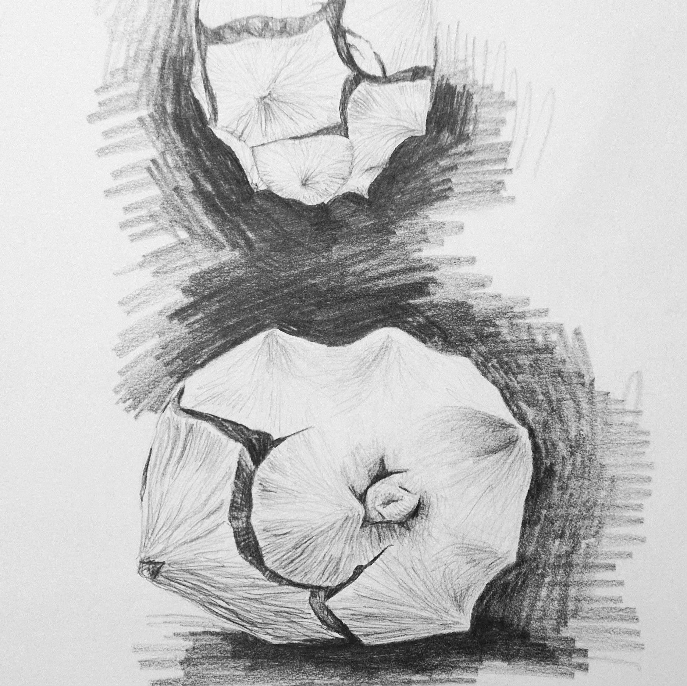

Über mich
Ich bin Generalistin mit Erfahrung in den Bereichen E-Commerce, Social-Media-Marketing und Ausstellungsdesign.
Über viele Jahre hinweg habe ich mit außergewöhnlichen Produkten gearbeitet und Möbel sowie Ausstellungen
aus Karton gefertigt.
Ich setze gerne Ideen um, finde technische Lösungen und erschaffe Dinge.
Der Weg in die digitale Welt
Ich habe das Familienunternehmen Stange Design GmbH und die Produkte digital repräsentiert und
mit einem Relaunch von Website und Onlineshop gemeinsam mit Entwicklern und Agenturen Funktionalität
und Ästhetik verbessert.
Zwischen 2016 und 2017 habe ich erste Schritte im Webdesign unternommen
und einen Kurs in Mediendesign sowie eine Weiterbildung absolviert.
2018 und 2022 habe ich die Website und den Onlineshop nochmals durch eigene Entwicklungen erneuert.
Es folgten Weiterbildungen im Full-Stack-Development bei Careerfoundry (2020-2021) und
Webentwicklung/Softwareentwicklung bei OneCareer (2026).
Seit Juni 2026 engagiere ich mich ehrenamtlich bei der Stiftung Internationales Forum
und unterstütze bei der Websitepflege und weiteren digitalen Projekten.
Meine Freizeit verbringe ich gerne mit Fahrradtouren oder surfen, gärtnern, lesen, stricken oder zeichnen.
